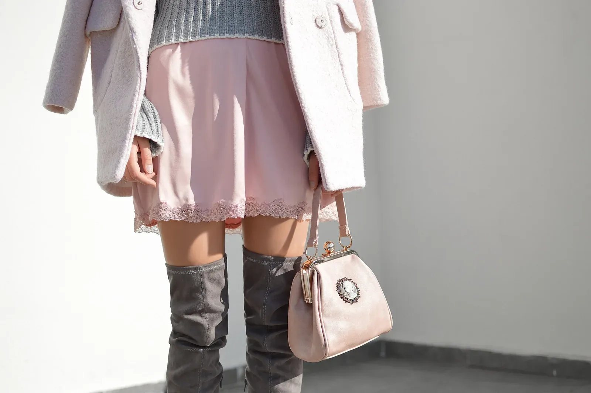
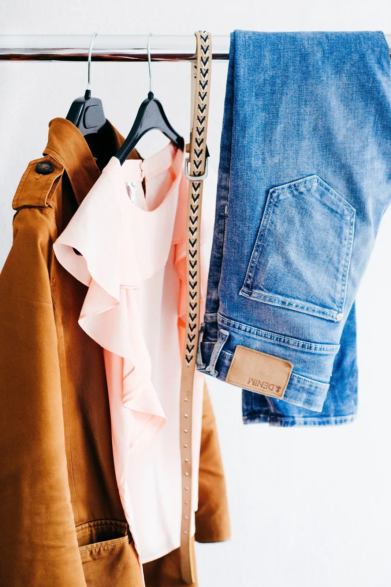

화병, 가방, 신발, 액세서리를 촬영 콘셉트에 맞춰 빌리거나 구해 옵니다. 직접 모아 둔 소품 400여 점도 쓸 수 있습니다.

가방 브랜드 광고 광고 봄 신상품 지면 광고 · 2025
가을 출근룩 10벌 쇼핑몰 여성 의류 쇼핑몰 룩북 · 2025| 서비스 | 포함 | 시간 | 가격 |
|---|---|---|---|
| 화보 · 광고 촬영 | 의상 · 소품 준비, 현장 진행 | 하루 | 800,000원부터 |
| 쇼핑몰 룩북 | 코디 20벌, 현장 진행 | 하루 | 600,000원부터 |
| 개인 스타일 상담 | 체형 진단, 추천 목록 | 2시간 | 150,000원 |
| 쇼핑 동행 | 상담 후 매장 동행 | 4시간 | 300,000원 |
촬영 의상 대여비와 교통비는 따로 듭니다.
자주 입는 옷 사진 10장과 가려는 자리를 알려 주세요.
네, 예복과 면접 차림 상담을 많이 합니다.
촬영 사흘 전까지는 따로 비용 없이 한 번 바꿀 수 있습니다.
Accademia del lusso 채널의 「Behind the Scenes: Shooting Day」. 화보 촬영 하루 동안 스타일리스트가 하는 일을 차례로 보여 줍니다.
패션 잡지 어시스턴트로 시작해 지금은 혼자 일합니다.
잡지 화보와 쇼핑몰 룩북, 브랜드 광고를 주로 맡습니다.
가진 옷으로 조합을 다시 짜 주셔서 새로 산 옷은 두 벌뿐이었습니다.
촬영 전날 콘셉트가 바뀌었는데도 소품을 새로 구해 오셨습니다.
룩북 20벌이 하루 만에 끝나서 촬영비가 줄었습니다.